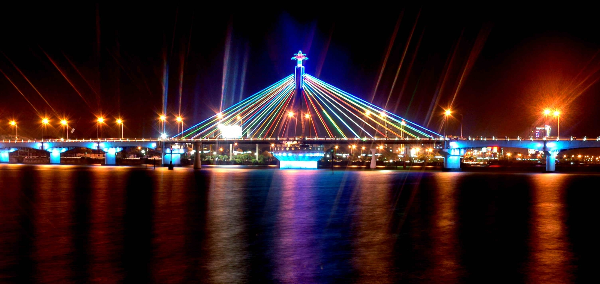

SONG HAN BRIDGE
CẦU SÔNG HÀN

Hàn River bridge (Vietnamese: Cầu Sông Hàn) is a bridge in Da Nang, Vietnam. Da Nang lies on the west side of the Hàn River and the beaches are to the east.
In the middle of the night, traffic is stopped from crossing the Song Han Bridge and it swings on its axis to allow shipping traffic to pass along the river. The Song Han Bridge in Danang is a cable-stayed bridge that is lit up brightly at night. The area around the bridge is the location of Da Nang's cultural center
Han River Bridge is the first swing one in Vietnam. This is the great pride of Danang people. The Han River Bridge - the symbol for new vitality and the developing desire of the City - was built with the contribution of the entire City's people. It seems that all poetic features of the Han River can be only expressed deeply in the space of Han River bridge with full of wind and ventilation. It not only facilitates transport and potential for tourism, wakes economic prospects of a vast area in the eastern City but is a cultural spot of Danang people today left behind for the future generations.
The City has added several new bridges cross the Han River. However, the bridge will not have any more feelings created for the people of the City as to what brought the Han River Bridge.